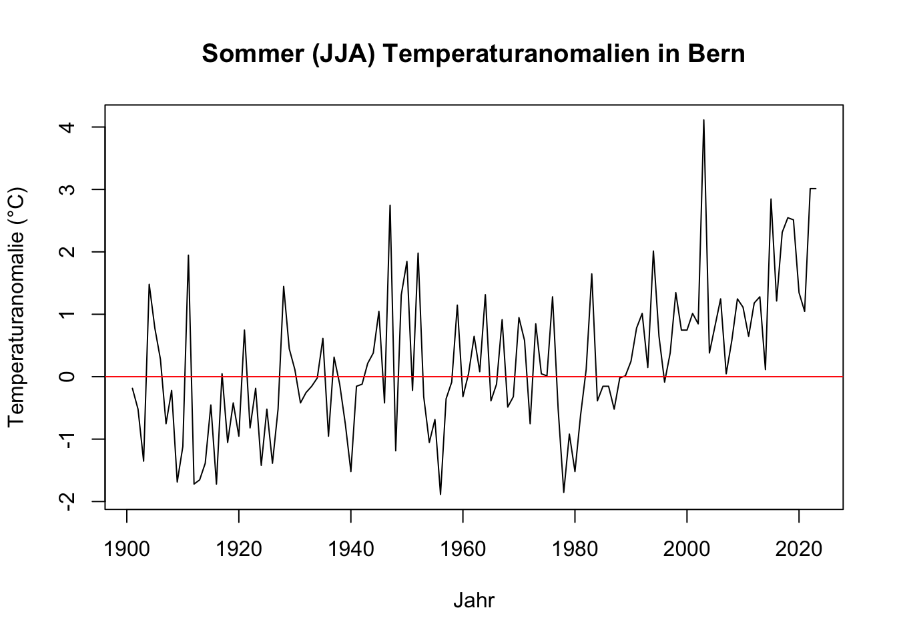

# Variablen erstellen und Wert zuweisen
a <- 5
# Die Zuweisung kann auch umgekehrt erfolgen
5 -> b
# Das gleiche funktioniert grundsätzlich aber auch mit dem = Operator
# Allerdings wird der <- Operator bevorzugt
c = 102 Grundlagen R
3 Grundlagen R
3.1 Grundsätzliches zu R
3.1.1 Zuweisungsoperator
In R werden Werte Variablen mit dem <- Operator zugewiesen.
3.1.2 Kommentare
Kommentare in R werden mit einem # eingeleitet. Sie können entweder in einer eigenen Zeile stehen oder am Ende einer Codezeile.
# Das ist ein Kommentar
a <- 5 # Das ist auch ein Kommentar3.1.3 Ausgabe
In R können Werte entweder mit der print() Funktion oder einfach durch Eingabe des Variablennamens ausgegeben werden.
# Ausgabe von Variablen
print(a)[1] 5b[1] 53.2 Datentypen
In R gibt es verschiedene Datentypen. Die wichtigsten sind:
- Numerische Werte (z.B.
5,3.14) - Zeichenketten (Strings) (z.B.
"Hallo Welt") - Logische Werte (
TRUE,FALSE) - Vektoren (in Python Listen) (z.B. c(1, 2, 3))1
- Data Frames (ähnlich wie Tabellen, Mischen von Datentypen möglich)
- Matrizen (ähnlich wie in der Mathematik, keine Mischung von Datentypen möglich)
3.2.1 Vektoren
Da Vektoren eine der grundlegenden Datenstrukturen in R sind, werden wir uns diese genauer ansehen.
Sie können mit der c() Funktion erstellt werden. Vektoren sind grundsätzlich ähnlich wie Objekte vom Typ list in Python. Vektoren können sämtliche Datentypen enthalten, jedoch nur einen Datentyp pro Vektor.
Auf Vektoren können verschiedene Operationen durchgeführt werden, wie z.B. Addition, Subtraktion, Multiplikation, Division, etc.
# Vektor erstellen
vectorA <- c(1, 2, 3, 4, 5)
# Länge des Vektors
length(vectorA)[1] 5# Logischer Vergleich
vectorA >= 3[1] FALSE FALSE TRUE TRUE TRUE# Arithmetische Operationen
vectorA + 5[1] 6 7 8 9 10Wenn wir nun den Vektor vectorA erneut ausgeben, beobachten wir, dass die Operationen nicht den ursprünglichen Vektor verändert haben.
vectorA[1] 1 2 3 4 5Um den Vektor zu verändern, müssen wir den veränderten Vektor entweder einer neuen Variablen zuweisen oder den Vektor direkt überschreiben.
# Vektor einer neuen Variablen zuweisen
vectorB <- vectorA + 5
# Vektor ausgeben
vectorB[1] 6 7 8 9 10# Wir können den Vektor auch direkt überschreiben
vectorA <- vectorA + 5
# Vektor ausgeben
vectorA[1] 6 7 8 9 103.2.1.1 Indizierung
Vektoren können indiziert werden, um auf bestimmte Elemente zuzugreifen.
Die Indizierung beginnt in R bei 1.
# Erstes Element des Vektors
vectorA[1][1] 6Wir können auch auf mehrere Elemente gleichzeitig zugreifen. Wenn wir z.B. auf das zweite bis vierte Element des Vektors zugreifen wollen, können wir dies mit dem : Operator tun.
# Zweites bis viertes Element des Vektors
vectorA[2:4][1] 7 8 9# Alternativ können wir auch einzelne Elemente überspringen
vectorA[c(1, 3, 5)][1] 6 8 103.2.1.2 Vektoren konkatenieren
Vektoren können auch konkateniert werden.
# Vektoren erstellen
vectorA <- c(1, 2, 3, 4, 5)
# Vektoren konkatenieren
vectorC <- c(vectorA, vectorB)
# Vektor ausgeben
vectorC [1] 1 2 3 4 5 6 7 8 9 103.2.1.3 Vektoren addieren
Vektoren können auch addiert werden. Hierbei werden die Vektoren elementweise addiert.2
# Vektoren addieren
vectorA + vectorB[1] 7 9 11 13 153.2.1.4 Wichtige Funktionen für Vektoren
| Funktion | Beschreibung | Beispiel | Ausgabe |
|---|---|---|---|
length() |
Länge des Vektors | length(vectorA) |
5 |
sum() |
Summe der Elemente des Vektors | sum(vectorA) |
15 |
mean() |
Durchschnitt der Elemente des Vektors | mean(vectorA) |
3 |
var() |
Varianz der Elemente des Vektors | var(vectorA) |
2.5 |
sd() |
Standardabweichung der Elemente des Vektors | sd(vectorA) |
1.5811388 |
min() |
Minimum des Vektors | min(vectorA) |
1 |
max() |
Maximum des Vektors | max(vectorA) |
5 |
range() |
Bereich des Vektors | range(vectorA) |
1, 5 |
3.2.2 Data Frames
In Data Frames können Vektoren unterschiedlicher Datentypen kombiniert werden. Sie sind ähnlich wie Tabellen in relationalen Datenbanken.
Data Frames können mit der data.frame() Funktion direkt erstellt werden.
# Data Frame erstellen
dataFrameA <- data.frame(
name = c("Alice", "Bob", "Charlie", "David"),
age = c(25, 30, 35, 40),
married = c(TRUE, FALSE, TRUE, TRUE)
)
# Data Frame ausgeben
dataFrameA name age married
1 Alice 25 TRUE
2 Bob 30 FALSE
3 Charlie 35 TRUE
4 David 40 TRUEWichtig ist, dass die Vektoren, die im Data Frame kombiniert werden sollen, die gleiche Länge haben müssen und dass die Vektoren nur einen Datentyp pro Vektor enthalten dürfen.
Wir beobachten auch hier, dass die Vektoren in der Initialisierung des Data Frames wieder mit der c() Funktion erstellt werden.
3.2.2.1 Indizierung
Data Frames können indiziert werden, um auf bestimmte Elemente zuzugreifen.
Die Indizierung erfolgt ähnlich wie bei Vektoren, jedoch mit dem Unterschied, dass wir zusätzlich auch die gewünschte Spalte angeben müssen. Dies erfolgt durch die Angabe der Zeilen- und Spaltennummer in eckigen Klammern.
Wenn wir eine ganze Zeile ausgeben wollen, geben wir nur die Zeilennummer an und lassen die Spaltennummer weg.
# Erste Zeile des Data Frames
dataFrameA[1, ] name age married
1 Alice 25 TRUE# Zweite Zeile und dritte Spalte des Data Frames
dataFrameA[2, 3][1] FALSEWir können mit dem $ Operator auch direkter auf bestimmte Spalten zugreifen.
# Spalte "name" des Data Frames
dataFrameA$name[1] "Alice" "Bob" "Charlie" "David" 3.2.2.2 Auswahl aus Data Frames wieder als Data Frame
Wir können subsetting verwenden, um einen Teil des Data Frames auszuwählen und diesen wieder als Data Frame zu speichern.
# Auswahl der Spalten "name" und "age" als Data Frame
dataFrameB <- dataFrameA[, c("name", "age")]
# Data Frame ausgeben
dataFrameB name age
1 Alice 25
2 Bob 30
3 Charlie 35
4 David 403.2.2.3 Wichtige Funktionen für Data Frames
| Funktion | Beschreibung | Beispiel | Ausgabe |
|---|---|---|---|
nrow() |
Anzahl der Zeilen des Data Frames | nrow(dataFrameA) |
4 |
ncol() |
Anzahl der Spalten des Data Frames | ncol(dataFrameA) |
3 |
colnames() |
Spaltennamen des Data Frames | colnames(dataFrameA) |
name, age, married |
rownames() |
Zeilennamen des Data Frames | rownames(dataFrameA) |
1, 2, 3, 4 |
summary() |
Zusammenfassung des Data Frames | summary(dataFrameA) |
Length:4 , Class :character , Mode :character , NA, NA, NA, Min. :25.00 , 1st Qu.:28.75 , Median :32.50 , Mean :32.50 , 3rd Qu.:36.25 , Max. :40.00 , Mode :logical , FALSE:1 , TRUE :3 , NA, NA, NA |
3.3 Daten importieren und exportieren
In R können Daten aus verschiedenen Dateiformaten importiert und exportiert werden. Dazu gehören z.B. CSV-Dateien, Excel-Dateien, JSON-Dateien, etc.
3.3.1 CSV-Dateien
CSV-Dateien können mit der read.csv() Funktion in R eingelesen werden.
# CSV-Datei einlesen
meteodaten <- read.csv('Data/meteodaten_saison.csv', sep = ',', header = TRUE)In diesem Beispiel wird die CSV-Datei meteodaten_saison.csv eingelesen. Der Parameter sep = ',' gibt an, dass die Werte in der CSV-Datei durch Kommas getrennt sind. Der Parameter header = TRUE gibt an, dass die erste Zeile der CSV-Datei die Spaltennamen enthält.
Achtung
Der Pfad zur Datei muss entweder absolut (Bsp.: C:/Users/username/Documents/data.csv) oder relativ zum aktuellen Arbeitsverzeichnis (Bsp.: Data/data.csv) angegeben werden.
In aller Regel ist es sinnvoll, den Pfad relativ zum aktuellen Arbeitsverzeichnis anzugeben. Das aktuelle Arbeitsverzeichnis kann in der Terminalkonsole mit dem Befehl getwd() abgefragt werden, und mit dem Befehl setwd() kann das Arbeitsverzeichnis geändert werden.
Eine gängige (und hier angewandte) Praxis ist es, ein Unterverzeichnis Data im Projektverzeichnis anzulegen und dort alle Daten abzulegen.
Der einfachste Weg ist es im Explorer einen Ordner anzulegen in welchem alle Skripte gespeichert werden. In diesem Ordner kann dann ein Unterordner Data erstellt werden, in welchem die Daten abgelegt werden.
In RStudio kann das Arbeitsverzeichnis über das Menü Session -> Set Working Directory -> Choose Directory... gesetzt werden.
3.3.1.1 Wichtige Funktionen für Datenimport
str(): Zeigt die Struktur des Data Frames an.
str(meteodaten)'data.frame': 492 obs. of 6 variables:
$ Jahr : int 1901 1901 1901 1901 1902 1902 1902 1902 1903 1903 ...
$ Saison : chr "Fruehling(MAM)" "Herbst(SON)" "Sommer(JJA)" "Winter(DJF)" ...
$ Bern_Mitteltemperatur : num 7.73 7.4 16.8 -2.73 7.53 ...
$ Bern_Niederschlagssumme : num 278 245 381 112 323 ...
$ GrStBernhard_Mitteltemperatur : num -4 -0.8 6.3 -10.6 -3.63 ...
$ GrStBernhard_Niederschlagssumme: num 495 521 285 356 448 ...
head(): Zeigt die ersten Zeilen des Data Frames an.
head(meteodaten) Jahr Saison Bern_Mitteltemperatur Bern_Niederschlagssumme
1 1901 Fruehling(MAM) 7.733333 277.8
2 1901 Herbst(SON) 7.400000 244.9
3 1901 Sommer(JJA) 16.800000 381.1
4 1901 Winter(DJF) -2.733333 112.4
5 1902 Fruehling(MAM) 7.533333 323.2
6 1902 Herbst(SON) 7.466667 231.7
GrStBernhard_Mitteltemperatur GrStBernhard_Niederschlagssumme
1 -4.000000 494.7
2 -0.800000 520.8
3 6.300000 285.2
4 -10.600000 356.2
5 -3.633333 448.1
6 -1.000000 335.6
tail(): Zeigt die letzten Zeilen des Data Frames an.
tail(meteodaten) Jahr Saison Bern_Mitteltemperatur Bern_Niederschlagssumme
487 2022 Sommer(JJA) 20.000000 238.3
488 2022 Winter(DJF) 2.233333 184.7
489 2023 Fruehling(MAM) 9.533333 272.5
490 2023 Herbst(SON) 11.966667 371.2
491 2023 Sommer(JJA) 20.000000 203.1
492 2023 Winter(DJF) 2.700000 233.1
GrStBernhard_Mitteltemperatur GrStBernhard_Niederschlagssumme
487 10.266667 256.8
488 -4.966667 270.0
489 -1.666667 388.4
490 2.966667 553.3
491 9.200000 288.4
492 -5.333333 228.7
summary(): Gibt eine Zusammenfassung des Data Frames aus.
summary(meteodaten) Jahr Saison Bern_Mitteltemperatur
Min. :1901 Length:492 Min. :-4.500
1st Qu.:1931 Class :character 1st Qu.: 4.883
Median :1962 Mode :character Median : 8.750
Mean :1962 Mean : 8.715
3rd Qu.:1993 3rd Qu.:12.750
Max. :2023 Max. :21.100
Bern_Niederschlagssumme GrStBernhard_Mitteltemperatur
Min. : 47.9 Min. :-11.2000
1st Qu.:185.7 1st Qu.: -5.1000
Median :243.2 Median : -1.4000
Mean :253.3 Mean : -0.9232
3rd Qu.:308.9 3rd Qu.: 3.2750
Max. :600.1 Max. : 10.5333
GrStBernhard_Niederschlagssumme
Min. : 125.9
1st Qu.: 383.1
Median : 491.5
Mean : 513.9
3rd Qu.: 619.2
Max. :1351.6 Indizierung: Mit der Indizierung können bestimmte Zeilen und Spalten des Data Frames ausgewählt werden.
meteodaten[1:10,] # Ersten 10 Zeilen Jahr Saison Bern_Mitteltemperatur Bern_Niederschlagssumme
1 1901 Fruehling(MAM) 7.733333 277.8
2 1901 Herbst(SON) 7.400000 244.9
3 1901 Sommer(JJA) 16.800000 381.1
4 1901 Winter(DJF) -2.733333 112.4
5 1902 Fruehling(MAM) 7.533333 323.2
6 1902 Herbst(SON) 7.466667 231.7
7 1902 Sommer(JJA) 16.466667 295.9
8 1902 Winter(DJF) -0.800000 193.9
9 1903 Fruehling(MAM) 7.433333 177.6
10 1903 Herbst(SON) 8.766667 267.3
GrStBernhard_Mitteltemperatur GrStBernhard_Niederschlagssumme
1 -4.0000000 494.7
2 -0.8000000 520.8
3 6.3000000 285.2
4 -10.6000000 356.2
5 -3.6333333 448.1
6 -1.0000000 335.6
7 5.3000000 242.7
8 -7.4000000 341.2
9 -4.4666667 409.7
10 -0.4666667 507.13.4 Daten als .csv- und .txt-Dateien exportieren
Daten können mit der write.csv() Funktion als CSV-Dateien und mit der write.table() Funktion als Textdateien exportiert werden.
3.4.1 .csv-Dateien
# CSV-Datei exportieren
write.csv(meteodaten,
file = "meteodaten.csv",
row.names = FALSE)| Parameter | Beschreibung |
|---|---|
x |
Das Data Frame, das exportiert werden soll. |
file |
Dateiname und Speicherort. Auch hier können absolute und relative Dateipfade verwendet werden. |
row.names |
Gibt an, ob die Zeilennummern in der CSV-Datei gespeichert werden sollen. |
3.4.2 .txt-Dateien
# Textdatei exportieren
write.table(meteodaten, # Das Data Frame, das exportiert werden soll
file = "meteodaten.txt", # Dateiname und Speicherort
sep = "\t", # Tabulator als Trennzeichen
eol = "\r", # Zeilenumbruch
na = "NA", # Wert für fehlende Daten
row.names = FALSE,
col.names = TRUE)| Parameter | Beschreibung |
|---|---|
x |
Das Data Frame, das exportiert werden soll. |
file |
Dateiname und Speicherort. Auch hier können absolute und relative Dateipfade verwendet werden. |
sep |
Trennzeichen für die Spalten. |
eol |
Zeilenumbruch. Kann je nach Betriebssystem erforderlich sein. |
na |
Wert für fehlende Daten. |
row.names |
Gibt an, ob die Zeilennummern in der Textdatei gespeichert werden sollen. |
col.names |
Gibt an, ob die Spaltennamen in der Textdatei gespeichert werden sollen. |
Wie sonst auch, haben die meisten Parameter Standardwerte, die nicht explizit angegeben werden müssen.
3.5 Umgang mit Fehlwerten
Fehlwerte sind in Datenanalysen ein häufiges Problem. In R werden Fehlwerte standardmässig mit NA (Not Available) dargestellt.
3.5.1 Fehlwerte in Funktionsaufrufen behandeln
Erstellen wir ein Beispiel-Vektor mit Fehlwerten:
vektor_mit_na <- c(1, 2, NA, 4, 5)Wenn wir nun z.B. die Summe des Vektors berechnen, erhalten wir:
sum(vektor_mit_na)[1] NADie Ausgabe ist NA, da R nicht weiss, wie es mit dem Fehlwert umgehen soll.
Wir können in diversen Funktionen definieren, wie mit Fehlwerten umgegangen werden soll. Dazu können wir den na.rm Parameter verwenden. (rm = remove) Dieser Parameter ist standardmässig auf FALSE gesetzt.
sum(vektor_mit_na,
na.rm = TRUE)[1] 12Die Ausgabe ist 12, da der Fehlwert ignoriert wird.
Dies funktioniert auch bei anderen Funktionen, wie z.B. mean(), var(), sd(), etc.
3.5.2 Fehlwerte im Dateiimport behandeln
Beim Import von Daten können wir mit dem Parameter na.strings definieren, welche Werte als Fehlwerte interpretiert werden sollen.
# CSV-Datei einlesen
meteodaten <- read.csv('Data/meteodaten_saison.csv',
sep = ',',
header = TRUE,
na.strings = c("NA", "N/A", "na"))In diesem Beispiel definieren wir, dass die Werte "NA", "N/A" und "na" als Fehlwerte interpretiert werden sollen.
3.5.3 Fehlwerte identifizieren
Fehlwerte können mit der is.na() Funktion identifiziert und mit der na.omit() Funktion entfernt werden.
# Fehlwerte identifizieren
is.na(vektor_mit_na)[1] FALSE FALSE TRUE FALSE FALSE# Fehlwerte entfernen
vektor_ohne_na <- na.omit(vektor_mit_na)Der Vektor ist nun: 1, 2, 4, 5.
3.5.3.1 Überprüfen auf Gleichheit
Fehlwerte müssen mit is.na() überprüft werden, da sie nicht mit == verglichen werden können.3
# Überprüfen auf Gleichheit
vektor_mit_na == NA[1] NA NA NA NA NA# Überprüfen auf Gleichheit mit is.na()
is.na(vektor_mit_na)[1] FALSE FALSE TRUE FALSE FALSE3.5.4 Fehlwerte ersetzen
Mit der replace() Funktion können Fehlwerte am einfachsten ersetzt werden.
# Vector mit falschen Fehlwerten
vektor_mit_falschen_na <- c(1, 2, -999, 4, 5)
# Fehlwerte ersetzen
vektor_mit_korrigierten_na <- replace(vektor_mit_falschen_na,
vektor_mit_falschen_na == -999,
NA)Der Vektor ist nun: 1, 2, NA, 4, 5.
3.6 Übungen
Berechne die Sommer (JJA) Temperaturanomalien zur Referenzperiode 1961 bis 1990 in Bern.
# Daten einlesen
meteodaten <- read.csv('Data/meteodaten_saison.csv', sep = ',', header = TRUE)
# Daten filtern
saison_sommer <- meteodaten[meteodaten$Saison == "Sommer(JJA)", ]
# Referenzwert der Periode 1961 bis 1990 berechnen
referenzwert <- mean(
saison_sommer$Bern_Mitteltemperatur[saison_sommer$Jahr >= 1961
& saison_sommer$Jahr <= 1990])
# Sommer (JJA) Temperaturanomalien berechnen und direkt im data frame speichern
saison_sommer$Bern_Mitteltemperatur_anomalie <-
saison_sommer$Bern_Mitteltemperatur - referenzwert
# Plot erstellen
plot(saison_sommer$Jahr,
saison_sommer$Bern_Mitteltemperatur_anomalie,
type = "l",
xlab = "Jahr",
ylab = "Temperaturanomalie (°C)",
main = "Sommer (JJA) Temperaturanomalien in Bern")
# null-Linie hinzufügen
abline(h = 0, col = "red")
Kleine Anmerkung: Hier wird der Vektor mit der
c()Funktion erstellt. Diese Funktion wird verwendet, um Werte zu kombinieren (combine).↩︎Wenn die Vektoren unterschiedliche Längen haben, wird der kürzere Vektor so oft wiederholt, bis er die Länge des längeren Vektors hat. Wenn die Länge des längeren Vektors kein Vielfaches der Länge des kürzeren Vektors ist, wird eine Warnung ausgegeben.↩︎
Der Vergleich von Fehlwerten mit
==ergibt immerNA, da R nicht weiss, ob der Fehlwert gleich einem anderen Wert ist oder nicht.↩︎